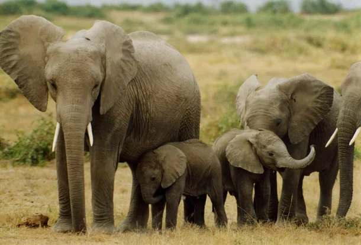

Os elefantes são animais mamíferos e pertencentes à Ordem Proboscidea. Dentre suas características, podemos destacar: Corpo de grandes proporções coberto por uma pele grossa, frouxa e com pelos distribuídos de forma espaçada, auxiliando-os na transferência de calor do corpo para o ambiente e funcionando como um mecanismo de termorregulação. Apresentam uma cabeça grande com orelhas largas e achatadas, sendo que estas possuem formas e marcas especiais, como uma impressão digital. Apresentam uma probóscide (tromba) longa e muscular formada pelo lábio superior e nariz. Ela desempenha diversas funções, como a manipulação de objetos e a ingestão de água. Apresentam grandes presas (dentes incisivos modificados) e grandes dentes molares, sendo um ou dois funcionais, ao mesmo tempo, em cada lado do maxilar. Quando o molar se gasta, outro se rompe. Caminham com as patas eretas, as quais funcionam como pilares verticais. Os pés possuem 5, 3 ou 4 artelhos com cascos. Atrás dos artelhos encontra-se uma estrutura como uma almofada elástica, onde se apoia o peso
